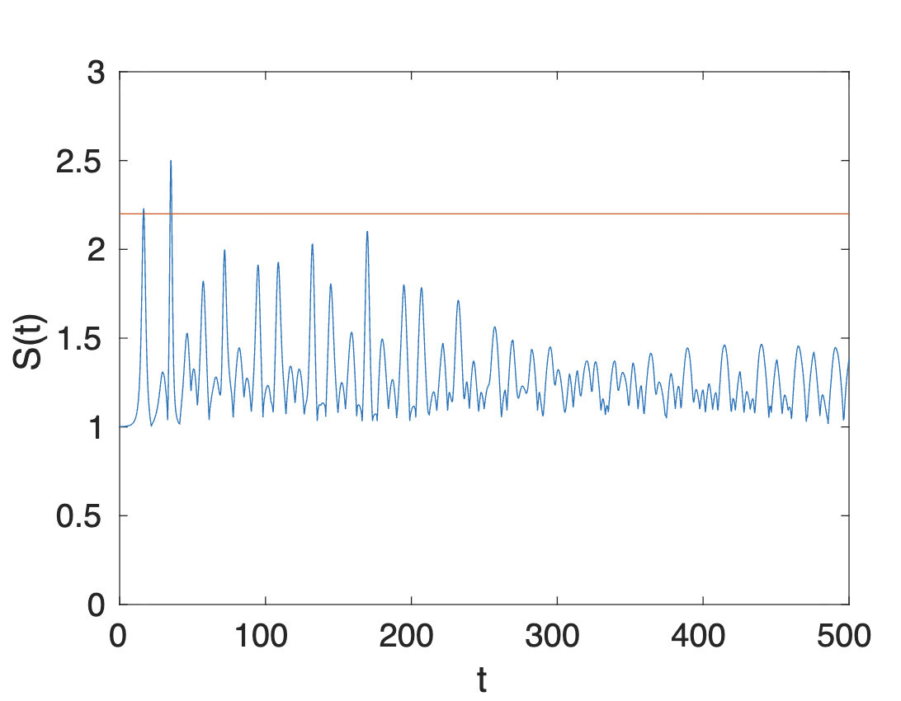
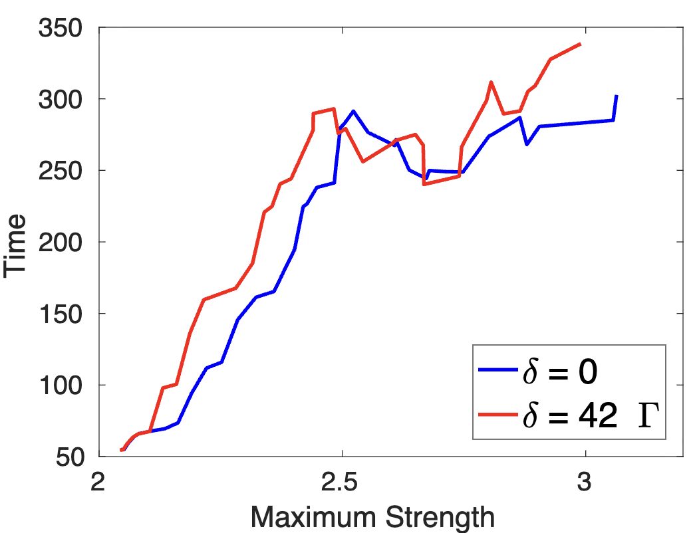

Stability of Rogue Waves
Brief: We explore the effects of viscosity on the stability of damped Stokes waves, downshifting, and rogue wave generation.
Project Outcomes
We investigate a higher order nonlinear Schrödinger equation with linear damping and weak viscosity, recently proposed as a model for deep water waves exhibiting frequency downshifting. Through analysis and numerical simulations, we discuss how the viscosity affects the linear stability of the Stokes wave solution, enhances rogue wave formation, and leads to permanent downshift in the spectral peak. The novel results in this work include the analysis of the transition from the initial Benjamin–Feir instability to a predominantly oscillatory behavior, which takes place in a time interval when most rogue wave activity occurs. In addition, we propose new criteria for downshifting in the spectral peak and determine the relation between the time of permanent downshift and the location of the global minimum of the momentum and the magnitude of its second derivative.

A rogue wave is a wave whose height is significantly larger than the surrounding waves. We average the surrounding wave height and plot it horizontally in orange.

We compare the strength of the wave for viscous and non-viscous cases. Here we see the viscous case, 𝛿=42Γ, has a greater maximum strength.
Tools & Skills: Python, Data Visualization, MATLAB, Jupyter Notebook and Labs, Partial Differential Equations, Mathematical Physics, Multivariate Analysis.
This paper and project were worked on during 2020-2022 during my undergraduate degree at The College of Charleston.
The effects of viscosity on the linear stability of damped Stokes waves, downshifting, and rogue wave generation. A. Calini, C. Ellisor, C. Schober, E. Smith